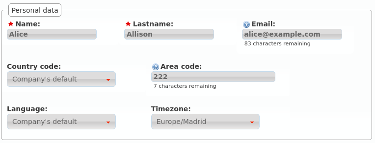
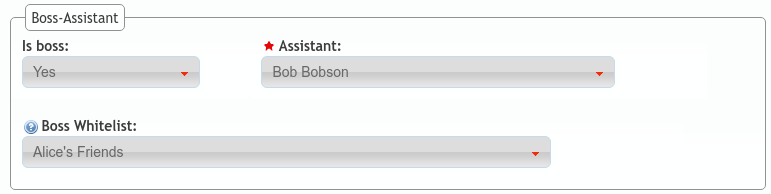
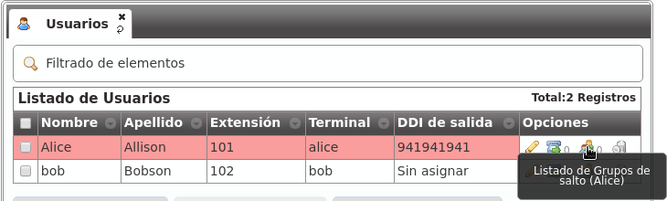

Users configuration¶
The installation process creates Alice and Bob users, allowing us to test internals calls between them without too much effort.
We skipped most of the settings in Users configuration that we will described in this section.
Personal data¶
- Name
- Used to identify this user in most of the screens. This is also the name that will be displayed in internal calls made from this user.
- Lastname
- Most of the times this is used to complete the previous field.
- Email used to send the user’s received voicemails. This is also used to identify the user in their portal.
- Country code / Area code
- Defines the way the user calls and the way the numbers are presented to this user.
- Language
- When a locution is played to this user, this language is used.
- Timezone
- User portal call list times will use this timezone.
Login Info¶

- Active
- Allows administrators to grant or disable user’s acces to the user’s portal.
- Password
- Password used to access the user’s portal.
- QR Code
- If enabled, a QR code for Grandstream Wave softphone configuration will be shown.
Basic Configuration¶

- Terminal
- The available terminals created in Terminals configuration are listed here for assignment.
- Screen Extension
- One of the available Extensions that this user will display when placing internal calls. While multiple extensions can be routed to the user, only one of them will be presented when the user calls.
- Outgoing DDI
- As described in Outgoing DDI configuration, determines the number that will present when placing external outgoing calls.
- Outgoing DDI Rules
- Manages exceptions to previous setting. Read Outgoing DDI Rules for further reference.
- Call ACL
- One of the created Call ACL groups, described it the previous sections.
- Do not disturb
- When this setting is enabled, the user won’t receive any call but can still place calls.
- Max Calls
- Limits the number of received calls if the user is handling simultaneously (inbound and outbound) more than the number set. Set 0 for unlimited calls.
- Calls from non-granted IPs:
- Enable calling from non-granted IP addresses for this user. It limits the number of outgoing calls to avoid toll-fraud. ‘None’ value makes outgoing calls unlimited as long as company IP policy is fulfilled. Read Roadwarrior users for further reference.
Voicemail¶

- VoiceMail enabled
- Enables or disables the existance of a users voicemail. This only makes the voicemail available to be routed as described in the section forward to voicemail.
- Voicemail Locution
- If set, this locution is played as voicemail welcome message when a voicemail for this user is going to be recorded. This only applies for call forwardings to voicemail described in the section forward to voicemail.
- Email notification
- Send an email to the configured user address when a new voicemail is received.
- Attach sounds:
- Attach the audio message to the sent email.
Note
If voicemail locution is not assigned, default locution will be used as long as the user has not recorded a custom message through the voicemail menu (calling to voicemail service code).
Boss-Assistant¶
This feature will turn the user into a boss that can only be directly call by:
- The selected assistant.
- Any origin that matches the white list.
The rest of the calls to a bos will be redirected to the assistant.
- Is boss
- Determines if this user is a boss.
- Assistant
- Who will receive the redirected calls of this boss.
- Whitelist
- Match Lists with origins that are allowed to call directly to the boss.
With the setup in the image, every call to Alice will be redirected to Bob, except the ones placed by Bob itself and those coming from any origin that matches Alice’s friends matchlist.
Group Configuration¶

As described in the sections Hunt groups and Call pickup, the user can be part of one or more huntgroups and pickup groups.
Those groups can be configured from the sections Hunt groups and Call pickup or the user’s screen if the groups already exists.
You can also configure the user’s hunt groups from the icon in each user line of the users list.
User Call Forward¶
The user’s call forward can be configured in the following button:

These are the fields and available values:
- Enabled
- Determines if the forward must be applied or not. This way, you can have most used call forward configured and toggle if they apply or not.
- Call Type
- Determines if the forward must be applied to external, internal or any type of call.
- Forward type
When this forward must be applied:
- Inconditional: always
- No answer: when the call is not answered in X seconds
- Busy: When the user is talking to someone (and call waiting is disabled), when Do not disturb is enabled or when the user rejects an incoming call.
- Not registered: when the user SIP terminal is not registered against IvozProvider.
- Target type
What route will use the forwarded call.
- VoiceMail
- Number (external)
- Extension (internal)
Hint
If we want to forward to other process, we can create an extension routed to that object and use the target type Extension.